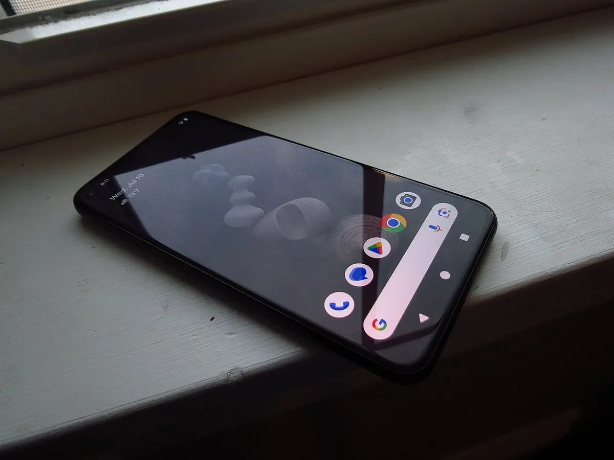

Almacenamiento de Google lleno: el truco del Pixel antiguo para hacer copia gratis en Google Fotos
Si te ha llegado el aviso de que tu almacenamiento de Google está casi lleno, o si pagas Google One cada mes solo por las fotos, quizá no conozcas este truco: algunos teléfonos Pixel antiguos hacen copia de seguridad en Google Fotos sin gastar ni un mega de tu cuenta. No es un fallo ni un apaño raro. Está escrito en la ayuda de Google.
Esta guía lo explica desde cero: qué es, por qué funciona, cómo lo monta la gente con su teléfono habitual y qué riesgos tiene. La escribimos los desarrolladores de DriveSync, una app que mueve fotos de OneDrive a un Pixel. Casi todo lo que sigue te sirve aunque nunca la instales.
El truco en una frase
Usas un Pixel antiguo como «puente»: tus fotos llegan a ese Pixel, Google Fotos las sube desde allí y esas copias no cuentan en tu espacio de Google. Tu teléfono principal sigue siendo el que usas a diario; el Pixel se queda en casa, enchufado y con wifi.
Por qué funciona: lo que dice Google
Cada cuenta de Google trae 15 GB gratis, y se reparten entre Gmail, Google Drive y Google Fotos. Por eso las fotos suelen ser lo que acaba llenando la cuenta. Cuando se llena, la ayuda de Google es clara: «Si te quedas sin almacenamiento, no podrás guardar fotos ni vídeos nuevos».
La excepción son los Pixel hasta el 5. La página Acerca de tu actividad y tu almacenamiento de Google Fotos dice que, si tienes un Pixel 5 o un modelo anterior, «disfrutarás de almacenamiento ilimitado para las copias de seguridad de fotos y vídeos que subas desde tu dispositivo sin coste económico». El detalle por modelo está en Elegir la calidad de copia de seguridad de tus fotos y vídeos, en el apartado sobre teléfonos Pixel. Lo resumimos así (consultado el 26 de noviembre de 2026):
| Modelo | Qué se guarda gratis y sin límite |
|---|---|
| Pixel (1.ª generación, 2016) | Todo en Calidad original |
| Pixel 2, 3, 3a, 4, 4a y 5 | En Ahorro de almacenamiento (comprimido) |
| Pixel 5a, 6 y posteriores | Nada: ocupan espacio como cualquier teléfono |
En el Pixel 2 y el Pixel 3 hay fechas de corte que cambian la calidad de lo que se copió antes. Si quieres el detalle modelo a modelo, lo tienes en nuestra guía del Pixel antiguo con OneDrive.
Maurizio Pesce from Milan, Italia, CC BY 2.0, Wikimedia Commons
¿Hasta cuándo? La ayuda de Google no pone fecha de fin a esta ventaja. Pero son condiciones de Google y puede cambiarlas cuando quiera, así que no organices tu fototeca dando por hecho que va a durar.
La letra pequeña antes de empezar
La calidad. Solo el Pixel de 1.ª generación guarda gratis en Calidad original. Del Pixel 2 al 5, lo gratis es Ahorro de almacenamiento: según Google, las fotos de más de 16 MP se reducen a 16 MP y los vídeos por encima de 1080p bajan a 1080p. Para ver fotos en el móvil o en la tele sobra; para recortar mucho o imprimir en grande, quizá no. Si tus originales te importan, guarda también una copia en un disco.
Las fotos que no hiciste con el Pixel. Aquí Google no es del todo explícito. Una página habla de las copias «que subas desde tu dispositivo»; la otra, de las fotos y los vídeos «que hagas con un Pixel». En la práctica, este truco se basa en subir desde el Pixel fotos hechas con otro teléfono, y Google no dice en ninguna de las dos páginas que eso quede fuera ni que quede dentro. Por eso, antes de pasar nada en serio, haz la prueba pequeña que explicamos más abajo.
Si ya estás lleno. El truco no borra nada de lo que ya ocupa tu cuenta. Sirve para que lo nuevo no sume. Para bajar del límite tendrás que liberar espacio aparte, y conviene hacerlo: Google avisa de que, si pasas 2 años sin almacenamiento disponible, «es posible que se eliminen tus fotos y vídeos de Google Fotos».
Qué necesitas
- Un Pixel de la tabla (del 1.ª generación al 5), aunque tenga la pantalla rayada o poca batería. Va a vivir enchufado.
- La app Google Fotos en ese Pixel, con tu misma cuenta de Google y la copia de seguridad activada. La calidad se elige tocando tu foto de perfil y entrando en Ajustes de Google Fotos, Copia de seguridad, Calidad de fotos y vídeos.
- Wifi en casa y una forma de llevar las fotos de tu teléfono principal al Pixel (lo vemos ahora).
Cómo lo monta la gente con su teléfono principal
Lo importante es que las fotos acaben en el Pixel y sea el Pixel quien las suba. Hay tres formas habituales:
- Una app de sincronización entre teléfonos. En las guías en español sobre este truco se citan apps como Syncthing o FolderSync: copian las fotos nuevas del teléfono principal a una carpeta del Pixel cuando los dos están en el mismo wifi. Es la opción más automática. No las hemos probado nosotros, así que revisa su documentación para saber cómo se configura cada una.
- Un ordenador (o computadora). Pasas las fotos del teléfono principal al PC y de ahí, por USB, a la carpeta
DCIM/Cameradel Pixel, que es la que Google Fotos copia sin configurar nada. Es lento, pero no necesitas instalar nada. - Una nube intermedia. Si tus fotos ya están en otro servicio (OneDrive, por ejemplo), las descargas en el Pixel y Google Fotos las sube desde ahí.
Si la copia la hace una app que guarda en otra carpeta que no sea DCIM/Camera, en Google Fotos tendrás que activar la copia de seguridad de esa carpeta del dispositivo.
Y un paso que mucha gente olvida: en el teléfono principal, desactiva la copia de seguridad de Google Fotos para esa cuenta. Si no, el teléfono principal también sube las fotos y esas copias sí ocupan tu espacio. Google Fotos sigue sirviendo para ver toda tu fototeca desde el teléfono principal; lo que cambia es quién sube las fotos.

ShadowRobotnikULF, CC BY-SA 4.0, Wikimedia Commons
Primero, una prueba pequeña
Antes de mover años de fotos, comprueba que en tu caso funciona:
- Apunta cuánto espacio usa tu cuenta de Google. Lo ves en la app Google One o en one.google.com/storage.
- Pasa al Pixel un lote pequeño (unas decenas de fotos y algún vídeo) hechas con tu teléfono principal.
- Espera a que Google Fotos termine la copia en el Pixel.
- Vuelve a mirar el espacio usado (los cambios pueden tardar un poco en verse). Si no ha subido, adelante. Si ha subido, esas fotos están contando y el truco no te compensa tal como lo tienes montado.
Abre también una de las fotos en Google Fotos, desliza hacia arriba y mira en los detalles el tamaño de la copia. Así sabrás con qué calidad se ha guardado.
Si no tienes un Pixel antiguo
Se encuentran de segunda mano. Fíjate bien en el modelo exacto: el Pixel 5a no está en la lista de Google aunque el nombre se parezca, y en un Pixel 2 o 3 recuerda que lo gratis es comprimido. Si lo que buscas es guardar originales sin pagar, el único que lo hace según Google es el Pixel de 1.ª generación, que ya tiene sus años.
Usa ese Pixel solo para esto: en casa, con tu cuenta de Google y poco más instalado.
Si tus fotos están en OneDrive
Si tu problema no es Google sino un OneDrive lleno, el Pixel también sirve de puente. Para ese caso hicimos DriveSync: desde el propio Pixel mueve las fotos de OneDrive directamente a DCIM/Camera, comprueba cada archivo y solo entonces lo borra de OneDrive. Somos el equipo que la desarrolla y tiene límites: la versión gratuita no pasa de 100 MB por archivo, y para que OneDrive libere el espacio hay que vaciar su papelera de reciclaje desde la web. Lo contamos paso a paso en la guía del Pixel antiguo con OneDrive, junto con cómo vaciar el Pixel sin borrar las fotos de Google Fotos.
DriveSync es una app independiente, sin relación con Google ni con Microsoft.